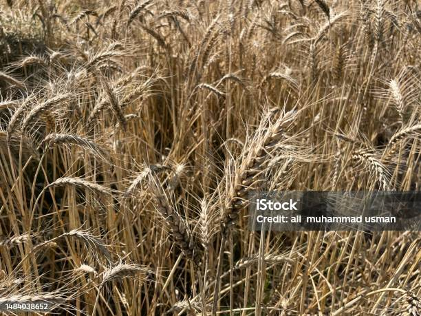
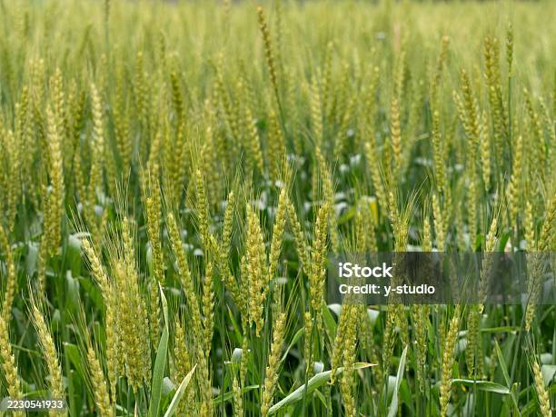
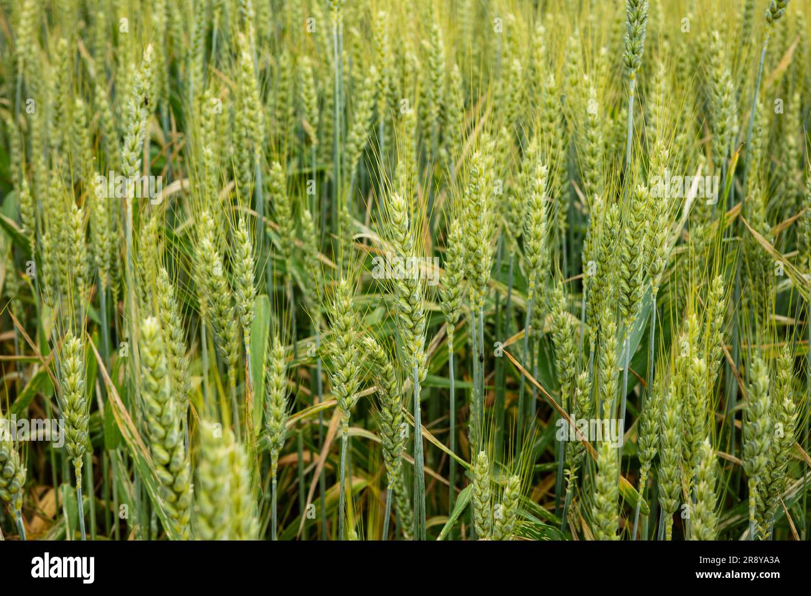
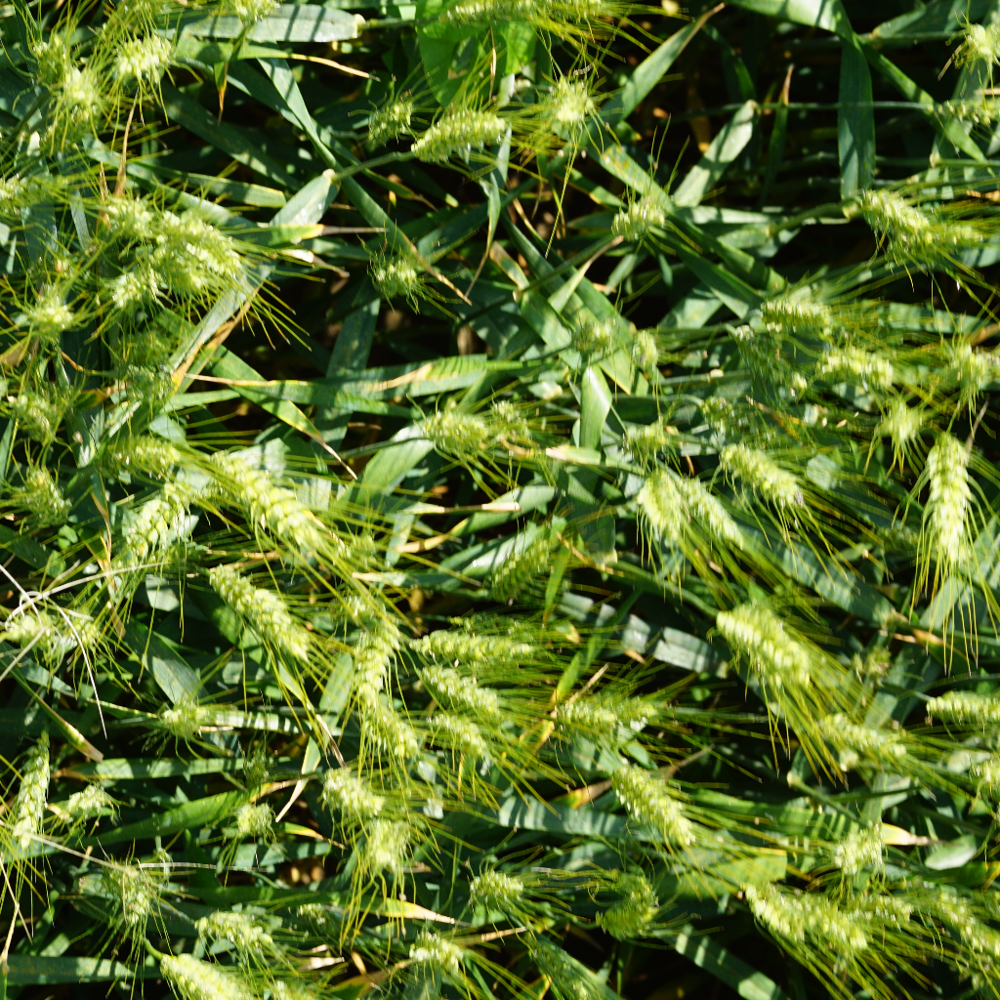
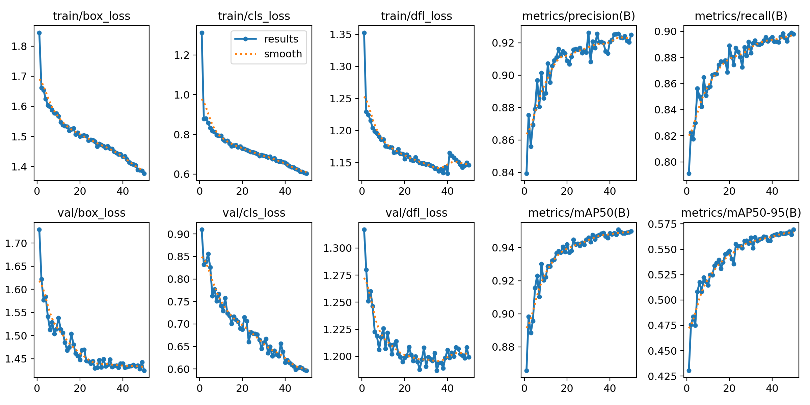
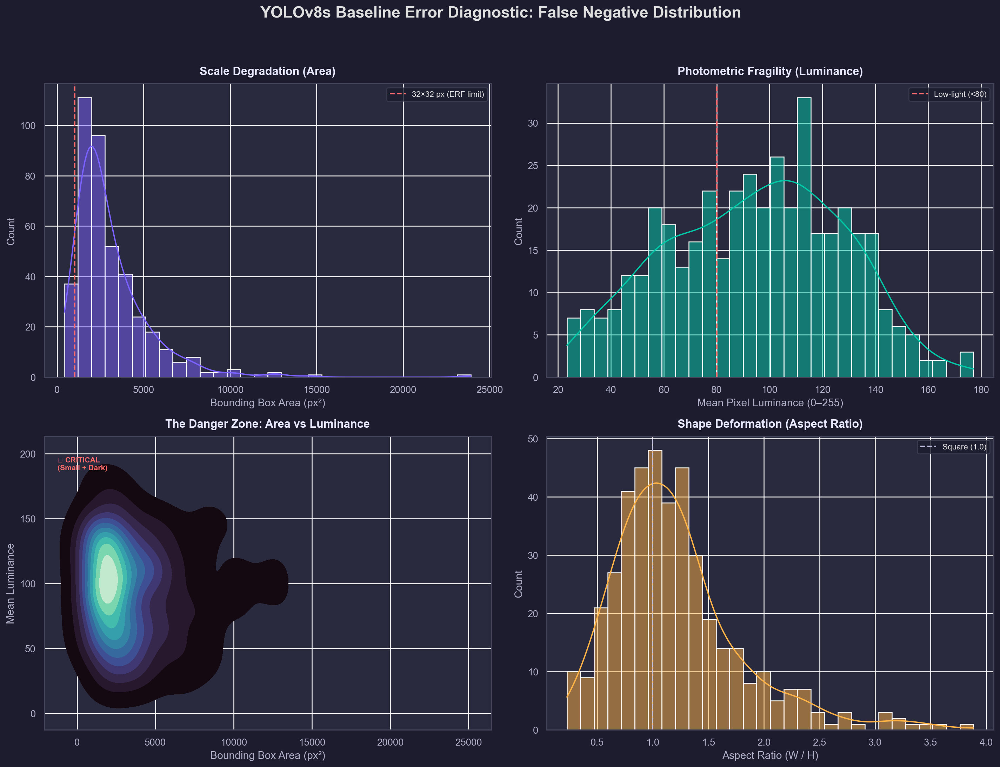
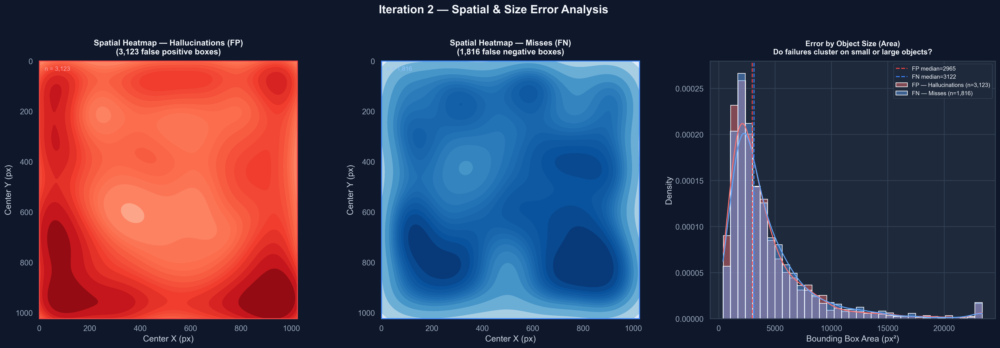
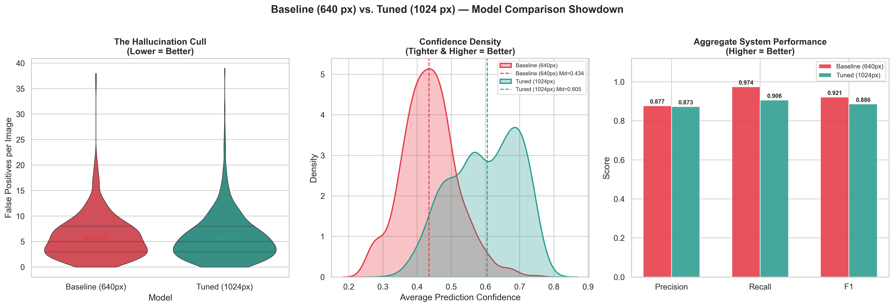
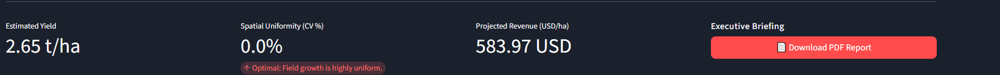
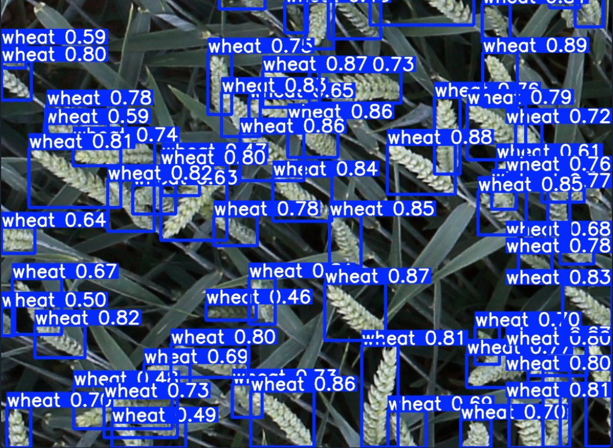

Vahe Gdlyan, Yexishe Makuchyan, Anahit Israelyan, Armen-Aris Shahinyan
Computer Vision & Machine Learning Research · 2026
Source Domains
Dataset Characteristics
01 Raw CSV ingestion — master_metadata.csv (3.37 MB)
02 Parse bounding boxes from nested JSON arrays
03 Convert [x, y, w, h] → YOLO normalized [cx, cy, w, h]
04 Stratified train/test split — 80/20 ratio
├── Train: 2,738 images (train.csv — 2.69 MB)
└── Test: 684 images (test.csv — 673 KB)
05 Export to YOLO directory structure
├── images/train/ + labels/train/
└── images/val/ + labels/val/
06 Final dataset archive: 3.92 GB (yolo_dataset.zip)
Augmentation Strategy
Coordinate Transform
Absolute pixel → normalized center coordinates [0, 1]
Dense mature canopy — golden phenotype

Sparse distribution — high contrast

Overexposure — photometric stress

Shadow region — luminance challenge

OOD Stress Case — Immature Green Canopy
56 combined errors · avg. confidence 0.44
The dataset's phenotypic bias toward mature golden-brown wheat creates a domain boundary for immature green canopies — establishing the model's irreducible error floor.
YOLOv8s · 640px · 50 epochs · Global Wheat Dataset


1,092
Zero-IoU False Positives
The baseline network generated spurious detections concentrated in low-luminance shadow regions and dense canopy overlap zones, where recall maximization incentivized speculative predictions.
The input distribution is fixed.
The loss gradient must be re-engineered.
Focal Boundary Loss
Amplifies gradient magnitude for predictions at overlapping boundary regions, imposing an asymmetric penalty on bounding box proposals that intersect adjacent ground-truth instances.
Adaptive Photometric Weighting
Dynamically scales loss contribution as a function of local luminance variance, enforcing elevated false-positive penalties in photometrically ambiguous regions.

Result: Median prediction confidence — 0.434 → 0.605 (+39.4%)
Operational Superiority over Metric Optimization

| Metric | Baseline (640px) | Tuned (1024px) | Δ |
|---|---|---|---|
| mAP@50 | 0.950 | 0.944 | −0.006 |
| Recall | 0.974 | 0.906 | −0.068 |
| Median Confidence | 0.434 | 0.605 | +39.4% |
| Zero-IoU FP Count | 1,092 | 0 | ELIMINATED |


01 High-resolution drone imagery ingestion
02 Tuned YOLOv8s inference at 1024px
03 Non-Maximum Suppression (conf + IoU)
04 Agronomic analytics computation
├── Yield estimation (t/ha)
├── Spatial uniformity (CV%)
└── Revenue projection
05 Automated PDF executive report
Live: huggingface.co/spaces/gdlyanvahe/AgriVision-Engine
Identified Limitations
Motion Blur Sensitivity
High-velocity UAV traversal introduces edge deformation that degrades bounding box localization precision.
Domain Constraint
Network weights specialized for wheat canopy phenotypic topology. Transfer to alternative crop species requires supervised retraining.
Proposed Extensions
Temporal Consistency Module
Inter-frame smoothing to absorb motion artifacts across sequential captures.
Multi-Spectral Data Fusion
Integration of NDVI spectral indices for direct chlorophyll density correlation.
REST API Microservice
FastAPI-based inference decoupling for IoT and third-party application integration.
Thank you. We will now take questions.